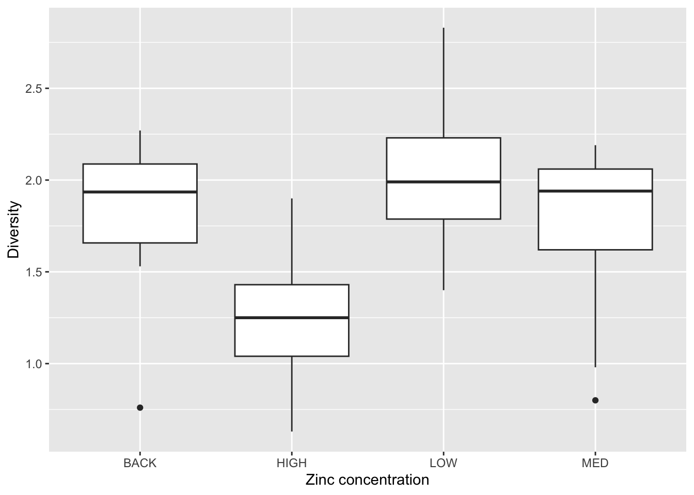
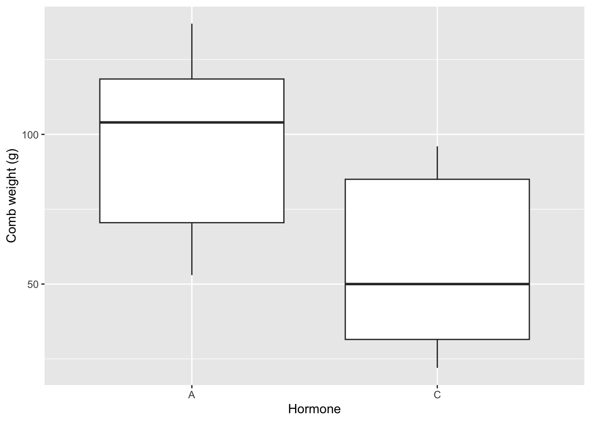
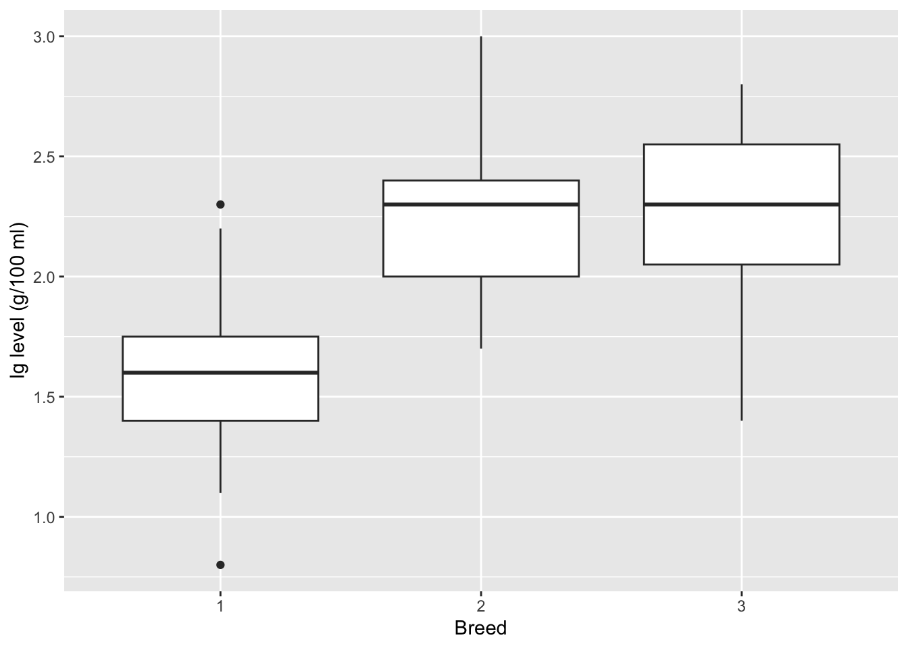
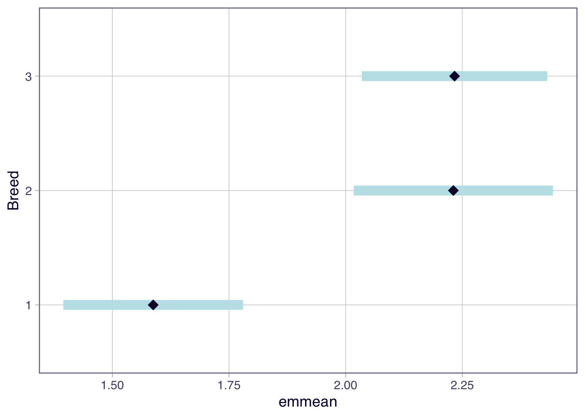

# A tibble: 4 × 3
Zinc mean sd
<fct> <dbl> <dbl>
1 BACK 1.80 0.485
2 HIGH 1.28 0.427
3 LOW 2.03 0.445
4 MED 1.72 0.503Welcome!
This week we will analyse diatom diversity in streams, compare comb weights in chicks, and test immunoglobulin levels across lamb breeds using one-way ANOVA.
You will come across two types of tasks in this lab. Worked Examples have solutions you can expand and check straight away. Exercises do not — solutions for these will be posted on Friday evening.
As always, don’t forget to take regular breaks in between sections. A good rule of thumb is to work for 20-25 minutes, then take a 5-minute break. This will help you stay focused and avoid burnout.
Learning outcomes
In this lab, we will learn how to:
- Explore grouped data using summary statistics and graphical summaries.
- Fit a one-way ANOVA using
aov()and interpret the ANOVA table. - Perform post-hoc comparisons using
emmeans. - Explain when a two-sample t-test gives the same results as a one-way ANOVA.
Specific goals
By the end of this lab, you should be able to:
Preparation
This lab uses tidyverse, readxl, and emmeans. Install any you are missing by running the following in the console:
Downloads
| File | Used in | Download |
|---|---|---|
diatoms.xlsx |
Sections 1–2 | Download |
chick_marigold.xlsx |
Section 3 | Download |
lambs.csv |
Section 4 | Download |
Save all files into a folder called data inside your project folder.
1. Exploring diatom diversity (~15 min)
Coal miners once carried canaries underground as indicators of air toxicity. Diatoms are the freshwater equivalent, acting as bioindicators whose diversity changes with water quality. Medley and Clements (1998) surveyed 34 streams in the Rocky Mountains of Colorado, where decades of mining had left zinc leaching into the water, and counted diatom species at each site. Does zinc contamination reduce diatom diversity?
Getting started
Let us warm up. This section is a quick refresher on data import, summary statistics, and plotting and should be straightforward if you have been following the labs in the past couple of weeks. If you have any questions, ask your tutor or post on Ed Discussion.
Worked Example 1
Import the Diatoms worksheet from diatoms.xlsx, check the data structure with str(), and convert the character variables Zinc and Stream to factors. Use the code chunk below as a template for your own report.
If you have difficulty importing, see the data import guide.
library(tidyverse)
library(readxl)
# Look at the Excel file to work out the worksheet name and range:
diatoms <- read_excel(
path = "data/diatoms.xlsx",
sheet = ...,
range = ...
)
str(diatoms)
# Convert character variables to factors:
diatoms <- diatoms |>
mutate(
Zinc = as.factor(Zinc),
Stream = as.factor(Stream)
)Exploring the data
Before running any formal test, it helps to look at summary statistics and plots to see what patterns emerge.
Exercise 1
Calculate the mean and standard deviation of Diversity for each level of Zinc. What do the values suggest about differences between groups?
Solution
The mean diversity for the HIGH zinc level is noticeably lower than the other groups, suggesting that high zinc concentrations may reduce diatom diversity. The standard deviations are fairly uniform (ratio of largest to smallest is less than 2), so the assumption of constant variance appears reasonable.
Even before doing any formal statistics, summary statistics are useful decision tools. If the means are very different and the standard deviations are small, we might already have a good idea that there are differences between groups, and knowing the distribution of the data can help us decide which test to use and how to check assumptions.
However, numbers alone can be hard to interpret. This is where plotting comes in to present the data in a more intuitive way. A boxplot is a good choice for grouped data, as it shows the median, interquartile range, and potential outliers.
Exercise 2
Produce a boxplot of Diversity grouped by Zinc. Add appropriate axis labels. What does the plot tell you about differences between groups?
With fewer than 10 observations per group, boxplots are often more informative than histograms.
Solution

- The median diversity for the
HIGHzinc group is noticeably lower than the other groups. - The boxes (Q1 to Q3) for the
HIGHgroup do not overlap with those of the other groups, but the remaining groups overlap with each other. This is initial evidence that high zinc concentration is associated with lower diatom diversity.
Take this opportunity to explore the data further if you like. You could make a histogram of the Diversity values within each Zinc group, or calculate other summary statistics such as the range or interquartile range. The more you understand the data before fitting a model, the better you will be able to interpret the results and check assumptions.
Once you are done, take a quick break. It is important to step away from the screen regularly.
2. Testing for differences (~25 min)
We noticed (hopefully) in Section 1 that the HIGH zinc group has lower diatom diversity than the others. But is that difference real, or could it be random variation? A one-way ANOVA will test this formally.
The ANOVA model
A one-way ANOVA tests whether the means of several groups are all equal. The model is:
y_{i,j} = \mu_i + \varepsilon_{i,j}
where y_{i,j} is the diversity for observation j in zinc group i, \mu_i is the mean of group i, and \varepsilon_{i,j} is the residual.
The hypotheses are:
H_0: \mu_1 = \mu_2 = \ldots = \mu_t H_1: \text{not all } \mu_i \text{ are equal}
We will cover model assumptions formally next week when we look at residual diagnostics.
Fitting the model
In general, we “fit a model” when we test hypotheses, because models explain the relationships between data in a manner that is more flexible than fitting mathematical equations.
Worked Example 2
Fit a one-way ANOVA to test whether diatom diversity differs across zinc levels. Use aov() to fit the model and summary() to view the ANOVA table. Try to interpret the ANOVA table before looking at the solution below.
The general formula is aov(response ~ group, data = ...).
TipSolution
Df Sum Sq Mean Sq F value Pr(>F)
Zinc 3 2.567 0.8555 3.939 0.0176 *
Residuals 30 6.516 0.2172
---
Signif. codes: 0 '***' 0.001 '**' 0.01 '*' 0.05 '.' 0.1 ' ' 1The ANOVA table shows:
- Df: degrees of freedom. Treatment df = number of groups minus 1 (4 − 1 = 3). Residual df = total observations minus number of groups (34 − 4 = 30).
- Sum Sq: how much variation is explained by the grouping (Zinc) versus left unexplained (Residuals).
- Mean Sq: Sum Sq divided by Df. This gives the average variation per degree of freedom.
- F value: the ratio of treatment Mean Sq to residual Mean Sq. A large F suggests that group differences are bigger than random noise.
- Pr(>F): the P-value. If this is below 0.05, we reject H_0.
Interpreting the results
The assumptions of the ANOVA (normality, equal variances, independence) appear reasonable based on our exploration in Section 1. The standard deviations were similar across groups, and nothing in the boxplot suggested serious departures from normality.
However, we should always formally check the assumptions by looking at model residuals. We will cover this in more detail next week, but here is a quick look at normality and equal variance using the approach from Tutorial 3.
The QQ plot shows points falling roughly along the line, and the Shapiro-Wilk test is not significant (P > 0.05), so normality is reasonable. We already checked the SD ratio in Section 1 and found it was below 2, supporting equal variances.
Exercise 3
Based on the ANOVA output from Worked Example 2, is there a significant difference in diatom diversity across zinc levels? Write a one-sentence reporting statement that includes the F statistic, degrees of freedom, and P-value.
A reporting statement typically follows this pattern: “There was a significant difference in [response] across [groups] (F = …, df = …, P = …).”
Solution
There are significant differences between the levels of zinc concentration in terms of diatom diversity (F = 3.9, df = 3, 30, P = 0.02).
Post-hoc comparisons
The ANOVA tells us that at least one group mean differs from the others, but not which ones. We use post-hoc testing to find out.
Worked Example 3
Use the emmeans package to compute estimated marginal means and their confidence intervals for each zinc level. Then visualise the results with plot().
emmeans(model, "factor_name") takes a fitted model and the name of the grouping variable.
TipSolution
Welcome to emmeans.
Caution: You lose important information if you filter this package's results.
See '? untidy' Zinc emmean SE df lower.CL upper.CL
BACK 1.80 0.165 30 1.461 2.13
HIGH 1.28 0.155 30 0.961 1.60
LOW 2.03 0.165 30 1.696 2.37
MED 1.72 0.155 30 1.401 2.04
Confidence level used: 0.95 The output shows the estimated mean diversity for each zinc level, along with the standard error and 95% confidence interval. Groups whose confidence intervals do not overlap are likely to be significantly different.
Exercise 4
Based on the emmeans output from Worked Example 3, which zinc levels differ from each other? How can you tell from the confidence intervals?
Solution
The 95% confidence interval for the HIGH zinc level does not overlap with the confidence intervals of the other levels (BACK, LOW, MED). This indicates that the HIGH group has significantly lower diatom diversity. The confidence intervals for BACK, LOW, and MED overlap with each other, so we cannot conclude that they differ.
Now is a good time to take a 5-minute break.
3. Comparing t-tests and ANOVA (~20 min)
So far we have used ANOVA on data with four groups. But what happens when there are only two? In Lecture 03a we learned the two-sample t-test, and in Lecture 03b we learned ANOVA. This section shows they give the same answer when there are two groups.
An experiment compared 15-day mean comb weights (g) of male chicks receiving one of two hormones: A (testosterone) or C (dehydroandrosterone). With only two groups, we could use either a pooled two-sample t-test or a one-way ANOVA.
The data
Read the Comb worksheet from chick_marigold.xlsx and convert Hormone to a factor:
Exercise 5
Before running any test, check whether the assumptions of normality and equal variance are reasonable. Produce a boxplot and calculate the standard deviations for each hormone group.
Solution

# A tibble: 2 × 3
Hormone mean sd
<fct> <dbl> <dbl>
1 A 97 29.1
2 C 56 27.8The distributions look roughly symmetrical with no outliers. The ratio of the larger SD to the smaller is less than 2, so the equal variance assumption is reasonable.
Exercise 6
Run a pooled two-sample t-test using t.test(..., var.equal = TRUE) and a one-way ANOVA using aov() on the same data. Compare:
- the degrees of freedom,
- the P-values, and
- the relationship between the t statistic and the F statistic.
When there are two groups, F = t^2. Verify this for your results.
Use var.equal = TRUE in t.test() to get the pooled (Student’s) t-test, which matches the ANOVA assumption of equal variances.
Solution
Two Sample t-test
data: CombWt by Hormone
t = 3.3764, df = 20, p-value = 0.003
alternative hypothesis: true difference in means between group A and group C is not equal to 0
95 percent confidence interval:
15.66997 66.33003
sample estimates:
mean in group A mean in group C
97 56 Df Sum Sq Mean Sq F value Pr(>F)
Hormone 1 9245 9245 11.4 0.003 **
Residuals 20 16220 811
---
Signif. codes: 0 '***' 0.001 '**' 0.01 '*' 0.05 '.' 0.1 ' ' 1- The t-test has df = 20. The ANOVA residual df is also 20. The treatment df is 1 (two groups minus one).
- Both P-values are 0.003.
- F = t^2: (3.38)^2 = 11.4 = F_\text{obs}.
When there are only two groups, the t-test and one-way ANOVA are mathematically equivalent. The ANOVA generalises the t-test to more than two groups.
Take a break!
4. Lambs (~25 min)
This final section is a capstone exercise. You will work through the entire ANOVA workflow on a new dataset with minimal guidance, bringing together everything from Sections 1 to 3.
The levels of immunoglobulin (Ig) in blood serum (g/100 ml) in three breeds of newborn lambs have been investigated. A total of 44 lambs were sampled, with approximately equal numbers per breed. Does immunoglobulin level differ between breeds?
The data
Here is a preview of the dataset. You will import it yourself as part of the exercise.
# A tibble: 44 × 2
Ig Breed
<dbl> <fct>
1 1.1 1
2 2.2 1
3 1.7 1
4 1.4 1
5 1.6 1
6 2.3 1
7 1.4 1
8 1.9 1
9 0.8 1
10 1.6 1
# ℹ 34 more rowsExercise 7
Analyse the lambs dataset using the full ANOVA workflow. Test the hypothesis that:
H_{0}: \mu_1 = \mu_2 = \mu_3 H_{1}: \text{not all } \mu_j \text{ are equal}
where \mu_j is the mean Ig level for breed j.
Work through each step:
Solution
Read the data and convert Breed to a factor:
tibble [44 × 2] (S3: tbl_df/tbl/data.frame)
$ Ig : num [1:44] 1.1 2.2 1.7 1.4 1.6 2.3 1.4 1.9 0.8 1.6 ...
$ Breed: Factor w/ 3 levels "1","2","3": 1 1 1 1 1 1 1 1 1 1 ...Exploratory analysis:
# A tibble: 3 × 4
Breed n mean sd
<fct> <int> <dbl> <dbl>
1 1 16 1.59 0.381
2 2 13 2.23 0.352
3 3 15 2.23 0.405
The distributions look roughly symmetrical. Check equal variance:
[1] 1.149486The ratio of the largest to smallest SD is less than 2, so we can assume equal variances.
Fit the ANOVA:
Df Sum Sq Mean Sq F value Pr(>F)
Breed 2 4.231 2.1156 14.56 1.67e-05 ***
Residuals 41 5.959 0.1453
---
Signif. codes: 0 '***' 0.001 '**' 0.01 '*' 0.05 '.' 0.1 ' ' 1The P-value is below 0.05, so we reject H_0. Post-hoc comparisons:
Breed emmean SE df lower.CL upper.CL
1 1.59 0.0953 41 1.40 1.78
2 2.23 0.1060 41 2.02 2.44
3 2.23 0.0984 41 2.03 2.43
Confidence level used: 0.95 
- There are significant differences in Ig levels across the three breeds (F = 14.6; df = 2, 41; P < 0.0001).
- The 95% CI for Breed 1 does not overlap with the CIs for Breeds 2 and 3.
- Breed 1 has substantially less immunoglobulin (1.59 ± 0.10 g/100 ml) than Breed 2 (2.23 ± 0.11 g/100 ml) and Breed 3 (2.23 ± 0.10 g/100 ml). This could have implications for disease susceptibility in newborn lambs of different breeds.
Conclusion
Closing thoughts
In this lab we worked through the full one-way ANOVA workflow: exploring grouped data, fitting a model with aov(), checking assumptions, running post-hoc comparisons with emmeans, and reporting results. We also saw that a two-sample t-test and a one-way ANOVA with two groups are mathematically equivalent (F = t^2, same P-value and residual degrees of freedom).
Next week we will look at model residuals in more detail and learn formal diagnostic checks for the ANOVA assumptions.
Attribution
This lab was developed using resources that are available under a Creative Commons Attribution 4.0 International license, made available on the SOLES Open Educational Resources repository.